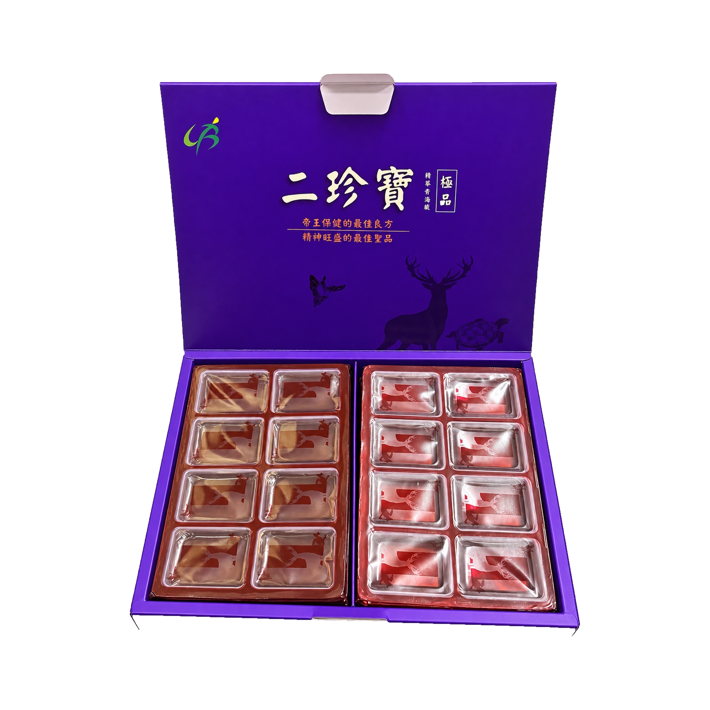

規格
600g±15g／盒，共64塊，每份約9.3公克

食品｜膏湯塊
紫色盒裝二珍寶精華膏湯塊，每盒600g±15g，共64塊。查看成分、食用與保存方式；價格與供貨請洽仙加味官方 LINE。
商品主圖採用真實產品照片，僅移除背景並維持原有包裝、標示及比例；實際商品外觀、尺寸與資訊請以收到的實物及原廠標示為準。
商品資訊
本品是紫色「二珍寶」，與紅色「四珍寶」分別建檔，圖片與成分均不混用。
600g±15g／盒，共64塊，每份約9.3公克
紫色原廠盒裝，64塊裝。原廠與包裝資訊請見下方專區。
外盒工廠登記編號：66-006365，原產地：臺灣
三年；製造與有效日期依實際收到的外盒標示
外盒標示投保產品責任險新臺幣五千萬元。實際保障範圍及理賠依有效保單為準。
原廠標示每份9.3公克、每盒64份；各項營養數值請以實際現貨盒身為準。
價格、批次、供貨、配送及訂購，統一洽仙加味官方 LINE。
依二珍寶原廠包裝資料整理，實際資訊仍以收到的商品外盒為準。
御漢堂／御漢堂康健股份有限公司
臺灣／三年（依現貨外盒標示）
66-006365（依原廠外盒標示）
外盒標示投保產品責任險新臺幣五千萬元；實際保障範圍、期間及理賠依有效保單為準。
製造商與出品商的法律身分須以二珍寶外盒逐項核對，不能僅依品牌或公司名稱推定。營養標示每份9.3公克、每盒64份；完整數值請參閱下方原廠背面實拍，待逐項核實後再轉錄。
產品資訊依原廠實物外盒整理；售價、供貨及訂購由仙加味官方 LINE 協助，個人健康適用性問題再由專業人員判斷。
600g±15g／盒，64塊裝。點擊照片可放大查看包裝內容與原廠標示。
